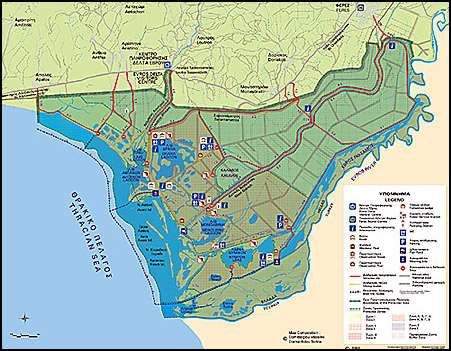
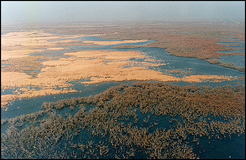

Γεωγραφικό μήκος: 26˚ 00΄ Γεωγραφικό πλάτος: 40˚ 52΄
Ιδιοκτησιακό καθεστώς: Ελληνική Πολιτεία
Περιφέρεια: Ανατολικής Μακεδονίας-Θράκης Νομός: `Εβρου
Νομή/Εκμίσθωση: Δήμος Αλεξανδρούπολης, Δήμος Φερών.
Το Δέλτα `Εβρου βρίσκεται στη Θράκη και ειδικότερα στο νότιο ανατολικό τμήμα του νομού `Εβρου. Οριοθετείται από την σιδηροδρομική γραμμή Αλεξανδρούπολης - Ορμενίου δυτικά, τον ποταμό `Εβρο ανατολικά, την πόλη των Φερών βόρεια και το Θρακικό Πέλαγος νότια.
Η συνολική έκταση της δελταϊκής πεδιάδας ανέρχεται σε 200.000 στρ. από τα οποία τα 150.000 στρ. βρίσκονται στην Ελλάδα και τα 50.000 στρ. στην Τουρκία. Τα 92.267 στρ. στην Ελλάδα είναι η Προστατευόμενη Περιοχή του καταλόγου Ραμσάρ.
Τα μορφολογικά στοιχεία και ο τρόπος ανάπτυξης του δέλτα του ποταμού `Εβρου δείχνουν ότι πρόκειται για σχηματισμό τοξοειδούς μορφής. Τον κυριότερο ρόλο διαμόρφωσης έχουν, τα θαλάσσια κύματα τα οποία εξαρτώνται άμεσα από τη φορά και τη ταχύτητα κίνησης των ανέμων καθώς και το κλαστικό υλικό και το νερό από τον `Εβρο ποταμό.
Στο υγροτοπικό οικοσύστημα του `Εβρου έχουν διακριθεί οι παρακάτω τύποι υγροτόπου σύμφωνα με το σύστημα ταξινόμησης τύπων υγροτόπων της Σύμβασης Ραμσάρ:
